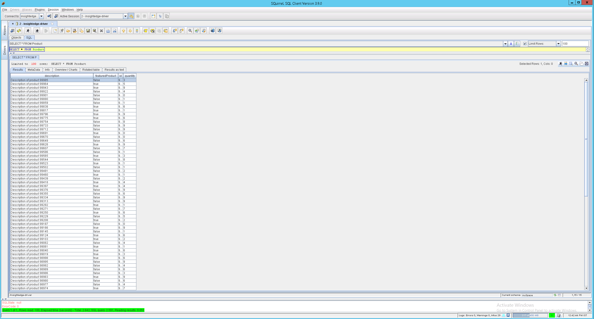

Configuring SQL Clients
The InsightEdge JDBC driver can be used with existing visualization tools, to gain insight into the data grid by using the specific tool-provided features such as drag and drop.
Examples:
SquirreL
To install SquirreL for use with the
-
Download and install SquirreL.
-
Copy all of the
\lib\required) to the squirreLlibfolder. -
Copy all of the
libfolder. -
Start SquirreL.
-
Click the Drivers vertical tab on the left, and then click + to add a new driver.

-
Click the Aliases vertical tab on the left, and then click + to add a new connection. Sample URL:
jdbc:insightedge:url=jini://*/*/mySpace?locators=127.0.0.1&groups=xap- -
Create a connection to the

-
Run a test query, for example
SELECT * FROM Product;(the data grid was filled withProductobjects in advance).